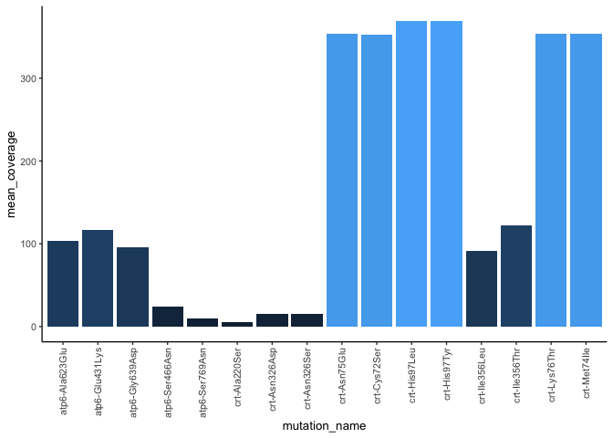

miplicorn establishes a unified framework for molecular inversion probe (MIP) and amplicon analysis. It provides the tools to quickly parse files several gigabytes large, filter and manipulate data, analyze data, and, most informatively, visualize data.
Installation
You may install the package from Github using devtools.
# install.packages("devtools")
devtools::install_github("bailey-lab/miplicorn")Usage
See vignette("miplicorn") for a more extensive introduction and a demonstration of several features of the package.
library(miplicorn)
ref_file <- miplicorn_example("reference_AA_table.csv")
alt_file <- miplicorn_example("reference_AA_table.csv")
cov_file <- miplicorn_example("reference_AA_table.csv")
data <- read_tbl_ref_alt_cov(ref_file, alt_file, cov_file, gene == "atp6" | gene == "crt")
data
#> # A tibble: 832 × 10
#> sample gene_id gene mutation_name exonic_func aa_change targeted
#> <chr> <chr> <chr> <chr> <chr> <chr> <chr>
#> 1 D10-JJJ-23 PF3D7_0106300 atp6 atp6-Ala623Glu missense_var… Ala623Glu Yes
#> 2 D10-JJJ-43 PF3D7_0106300 atp6 atp6-Ala623Glu missense_var… Ala623Glu Yes
#> 3 D10-JJJ-55 PF3D7_0106300 atp6 atp6-Ala623Glu missense_var… Ala623Glu Yes
#> 4 D10-JJJ-5 PF3D7_0106300 atp6 atp6-Ala623Glu missense_var… Ala623Glu Yes
#> 5 D10-JJJ-47 PF3D7_0106300 atp6 atp6-Ala623Glu missense_var… Ala623Glu Yes
#> # … with 827 more rows, and 3 more variables: ref_umi_count <dbl>,
#> # alt_umi_count <dbl>, coverage <dbl>
filter_coverage(data, 100)
#> # A tibble: 236 × 10
#> sample gene_id gene mutation_name exonic_func aa_change targeted
#> <chr> <chr> <chr> <chr> <chr> <chr> <chr>
#> 1 D10-JJJ-23 PF3D7_0106300 atp6 atp6-Ala623Glu missense_var… Ala623Glu Yes
#> 2 D10-JJJ-55 PF3D7_0106300 atp6 atp6-Ala623Glu missense_var… Ala623Glu Yes
#> 3 D10-JJJ-15 PF3D7_0106300 atp6 atp6-Ala623Glu missense_var… Ala623Glu Yes
#> 4 D10-JJJ-52 PF3D7_0106300 atp6 atp6-Ala623Glu missense_var… Ala623Glu Yes
#> 5 D10-JJJ-38 PF3D7_0106300 atp6 atp6-Ala623Glu missense_var… Ala623Glu Yes
#> # … with 231 more rows, and 3 more variables: ref_umi_count <dbl>,
#> # alt_umi_count <dbl>, coverage <dbl>
filter_targeted(data, "Yes")
#> # A tibble: 624 × 10
#> sample gene_id gene mutation_name exonic_func aa_change targeted
#> <chr> <chr> <chr> <chr> <chr> <chr> <chr>
#> 1 D10-JJJ-23 PF3D7_0106300 atp6 atp6-Ala623Glu missense_var… Ala623Glu Yes
#> 2 D10-JJJ-43 PF3D7_0106300 atp6 atp6-Ala623Glu missense_var… Ala623Glu Yes
#> 3 D10-JJJ-55 PF3D7_0106300 atp6 atp6-Ala623Glu missense_var… Ala623Glu Yes
#> 4 D10-JJJ-5 PF3D7_0106300 atp6 atp6-Ala623Glu missense_var… Ala623Glu Yes
#> 5 D10-JJJ-47 PF3D7_0106300 atp6 atp6-Ala623Glu missense_var… Ala623Glu Yes
#> # … with 619 more rows, and 3 more variables: ref_umi_count <dbl>,
#> # alt_umi_count <dbl>, coverage <dbl>
prev <- mutation_prevalence(data, 5)
prev
#> # A tibble: 16 × 4
#> mutation_name n_total n_mutant prevalence
#> <chr> <int> <int> <dbl>
#> 1 atp6-Ala623Glu 36 36 1
#> 2 atp6-Glu431Lys 39 39 1
#> 3 atp6-Gly639Asp 26 26 1
#> 4 atp6-Ser466Asn 15 15 1
#> 5 atp6-Ser769Asn 17 17 1
#> # … with 11 more rows
plot(prev)